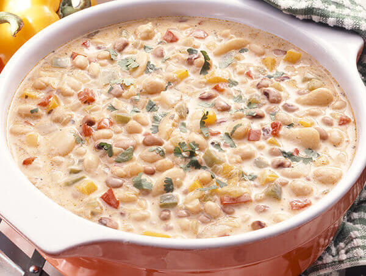
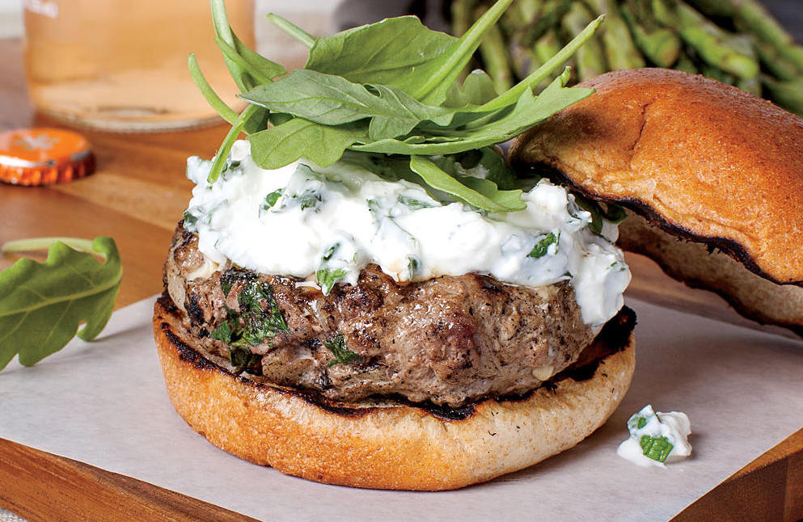

Your Favorite Recipes

Followers
1,246
Meredith Brokaw
Livingston, Montana
https://www.npr.org/templates/story/story.php?storyId=5424139Recipe
Baked Beans
Serves:
8

Followers
556
Lindsay Hunt
Wilson, Wyoming
https://www.instagram.com/lindsaymaitland/Recipe
Banh Mi Bowls
Serves:
4
Followers
56
Jane Hopkins
Buffalo, New York
https://www.tastesoflizzyt.com/country-white-bread/Recipe
Country White Bread
Yields:
4

Followers
10,537
Followers
6
Will Carey
Reston, Virginia
https://cooking.nytimes.com/recipes/1018180-perfect-buttermilk-pancakesRecipe
Buttermilk Pancakes
Serves:
5
Followers
15
Evan Dent
Brooklyn, New York
https://www.seriouseats.com/recipes/2012/05/grilled-italian-sausage-with-sweet-and-sour-peppers-and-onions-recipe.htmlRecipe
Sweet & Sour Sausage & Veggies
Serves:
6


Followers
21
Nancy Spetzler
Phoenix, Arizona
https://www.tasteofhome.com/recipes/creamy-white-chili/Recipe
White Chili with Chicken
Serves:
8

Followers